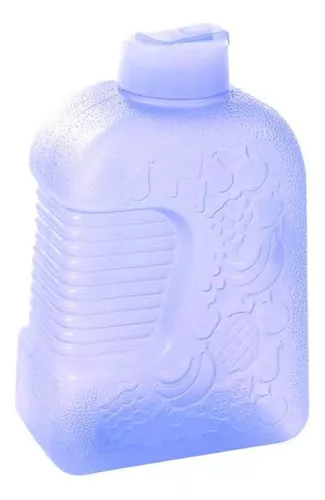
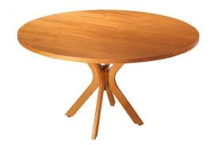

Imagem teste:

Resultado no Google Lens:
Garrafa de ÁguaResultado no Modelo Mobinet:
AzulResultado Final: Google-Lens ganhou
Imagem teste:

Resultado no Google Lens:
Mesa de MadeiraResultado no Modelo Mobinet:
MesaResultado Final: Empate
Imagem teste: